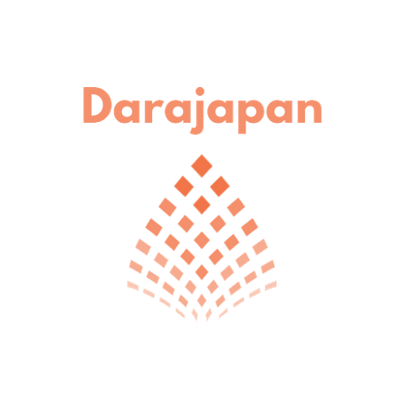
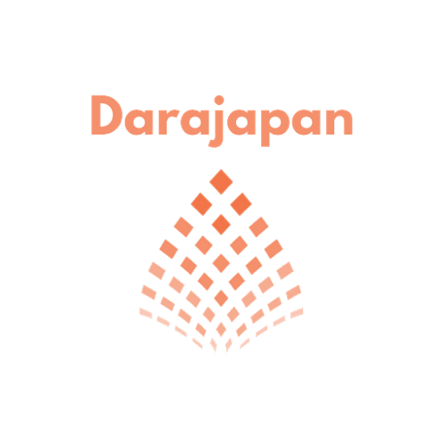

Why ”Imani Hacking “?
Welcome to IMANI HACKING BOOTCAMP, where we transform knowledge into formidable skills. We're a dedicated tech training center committed to helping you reach your IT potential. With expert-designed bootcamp programs for beginners and professionals, we offer flexibility through online learning. Join us on the journey to IT excellence and innovation.
Read more


 
